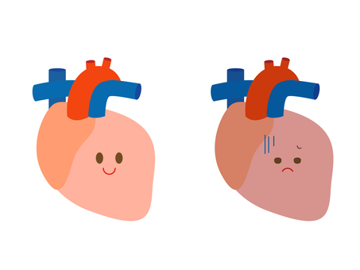

Using an open source healthcare data, chance of heart disease is predicted for each subject. Exploratory data analysis and cleaning is performed
before preparing the data to be used in a Pytorch CNN to obtain around 90% accuracy.
A Logistic Regression model trained to classify a cancer cell as benign or malignant type, deployed on Streamlit platform.
Created a interactive dashboard to change cell nuclei measurements and see how the classification results vary.s
Implemented a predictive monitoring system using trace signals and metrology data, collected from an etching product. Utilized self-organizing map (SOM) for health assessment, and Minimum Quantization Error (MQE) to calculate deviation from baseline state.
A suport vector machine (SVM) algorithm was deployed to assess the extent of degradation of the tool.
Compared various algorithms to choose the best in sklearn library to conduct Exploratory data analysis on students' test scores.
The project studied how test scores are affected by other variables such as test preparation time, gender, ethnicity, parental level of education etc.